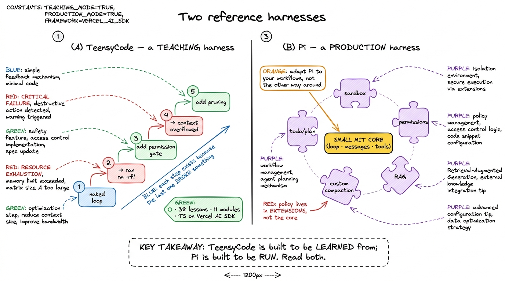
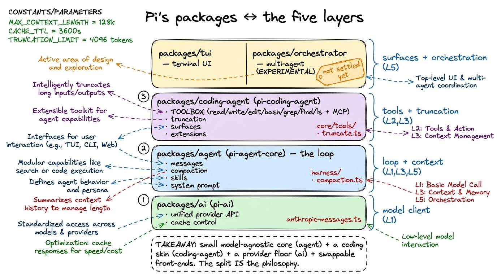
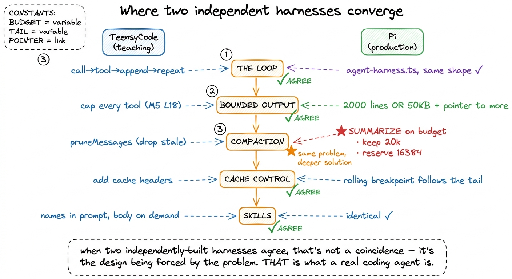

Two reference harnesses: TeensyCode vs. Pi MAP
You have now built all five layers in miniature, and you have read the concepts twice over — the loop, the tools, the context engine, durability, orchestration. There is exactly one thing left that a book cannot give you, and it is the most valuable: the feeling of watching those five layers at production scale, in real code that ships to real users. So for this last stretch we are going to read two real coding agents side by side, line by line, and let them argue with each other. When two independently-built harnesses agree on a decision, that agreement is the closest thing this field has to a law.
The two we picked are not random. They are the two most readable coding agents in the open, and they sit at opposite ends of a useful spectrum: one is built to be learned from, the other is built to be run.
The teaching harness: TeensyCode
The first is TeensyCode, the harness you build across Vercel Academy's "Build AI Agent Harness" course — 38 lessons across 11 modules, TypeScript on the Vercel AI SDK. Its genius is pedagogical. It is constructed lesson by lesson so that each step exists because the previous one broke something.1 This is the exact rhythm of the book you just read — add one layer, feel precisely what it buys you, then hit the wall that motivates the next. TeensyCode is that rhythm turned into runnable code, which is why it pairs so well with these chapters. You write the naked loop; it runs a dangerous command; so you add a permission gate. You let the conversation grow; it blows the context window; so you add pruning. Every mechanism arrives already motivated by a failure you just felt. Nothing is there "because real agents have it" — it is there because your agent, three lessons ago, fell over without it.
That is the best possible way to learn a harness. It is not, however, how you would ship one. A teaching harness optimizes for a clean derivation; a production harness optimizes for a decade of maintenance, a hundred integrations, and policy that changes every week. Which brings us to the other end of the spectrum.
The production harness: Pi
The second is Pi (earendil-works/pi, MIT-licensed, a.k.a. badlogic/pi-mono, pi.dev) — a real coding agent people use daily. Its defining design choice is stated right in its tagline: "a minimal agent harness — adapt Pi to your workflows, not the other way around." That sentence is a whole architecture. It means the core stays small and swappable, and almost every policy decision — sandboxing, permission UX, RAG, custom compaction — lives in extensions: ordinary TypeScript modules you bolt on.2 Compare TeensyCode Module 11, where extensibility is the final lesson you graduate to. In Pi, extensibility is not a feature layered on at the end — it is the shape of the thing. "Everything is an extension" is the load-bearing idea.

figure rendering · TeensyCode is a staircase of motivated lessons; Pi is a small core rinPi's package map: where each layer lives
Pi is a monorepo, and its package split maps almost one-to-one onto the five layers of this book. Learn the four packages and you have a mental index into every mechanism we are about to open up.
packages/ai (published as @earendil-works/pi-ai) is the unified provider API — one interface over Anthropic, OpenAI, and the rest, with the adapters living here. This is Pi's version of the model client you built in Layer 1, grown up. Crucially, cache control is implemented at this layer, in packages/ai/src/api/anthropic-messages.ts, because caching is a provider-protocol concern, not an agent concern.
packages/agent (@earendil-works/pi-agent-core) is the model-agnostic runtime: the loop, the message types, compaction, skills, and system-prompt assembly, all under packages/agent/src/harness/. This single package holds Layer 1 (the loop, in agent-harness.ts), most of Layer 3 (compaction lives in packages/agent/src/harness/compaction/compaction.ts), and Layer 5's building blocks (skills.ts). Notice what is not here: nothing about files, nothing about bash. This package doesn't know it's a coding agent — it's the generic engine.
packages/coding-agent (@earendil-works/pi-coding-agent) is where it becomes a coding agent: the toolbox (src/core/tools/), tool-output truncation, the interactive/print/RPC surfaces, and the extension system. This is Layer 2 (the hands) and the truncation half of Layer 3.
Then packages/tui is the terminal UI, and packages/orchestrator is experimental multi-agent orchestration — Layer 5's frontier, explicitly marked as not-yet-settled.

figure rendering · Pi's four packages line up with the book's five layers: pi-ai is the pThe toolbox, and the shape of a tool
The concrete hands live in packages/coding-agent/src/core/tools/, and the roster is exactly what your intuition from Layer 2 predicts: read, write, edit (with edit-diff.ts and a file-mutation-queue.ts behind it), bash (backed by bash-executor.ts), grep, find, and ls — plus any MCP tools the user has wired in. Every one is the same four-field object you built by hand: {name, description, parameters, execute}.
The detail worth pausing on is the description. In your bare harness the descriptions were one-liners ("Read a text file and return its contents"). In Pi they are long and instructional — small manuals the model reads before deciding how to call the tool. read's description literally coaches the model: use offset/limit for large files, and "when you need the full file, continue with offset until complete."3 This is Vercel Academy Module 2's "5-section tool description" discipline made real. The description isn't documentation for you — it's a prompt fragment that teaches the model the tool's contract and etiquette. See tool schemas as contracts. The tool doesn't just do a thing; it tells the model how to use it well. That is the difference between a toy tool and a production one.
Where they agree — and why that's the whole point
Here is the payoff of reading both. TeensyCode and Pi were built by different people, for different reasons, in different styles — and on the fundamentals they land in the same place.
Both build the identical loop: call the model, run whatever tools it asked for, feed the results back, repeat until it stops asking. Both decide that tool outputs must be bounded — you never shove a 500 MB log into the context window; Pi caps every tool at 2,000 lines or 50 KB, whichever comes first, and hands the model a pointer to the rest. Both reach for compaction when the conversation gets long — though here they diverge instructively: Vercel's pruneMessages bluntly drops stale tool results, while Pi's default is summarization on a real token budget, keeping keepRecentTokens = 20,000 tokens verbatim and firing when usage climbs within reserveTokens = 16,384 of the ceiling.4 That divergence is not a contradiction — it's the same problem solved at two levels of maturity. TeensyCode shows you the simplest thing that works; Pi shows you what the simplest thing grows into once forgetting why you did something 40 turns ago becomes unacceptable. Read compaction and summarization for the full story. Both use cache control to keep a long session cheap. And both treat skills as progressive disclosure — names in the prompt, bodies loaded only on demand.

figure rendering · Two independently-built harnesses converge on the loop, bounded outputWhen two harnesses built in isolation converge on a decision, that decision is not a matter of taste — it is being forced by the problem. That is precisely why reading both is the fastest way to understand what a real coding agent is: TeensyCode shows you why each mechanism has to exist, and Pi shows you what each one looks like when it has to survive contact with production.
The four deep-dives that follow
The rest of this section opens up the four mechanisms where Pi's production choices are most worth studying in detail — the places where "the simplest thing that works" and "the thing that ships" pull furthest apart. Read them in order:
- Pi's package architecture — the small-core-plus-extensions design in full, and how a policy decision becomes an extension.
- Compaction, for real — how
compaction.tsmeasures tokens off the provider's real usage block, keeps a 20k recent window, and distills everything older into a structured summary that preserves decisions and file operations. - Rolling cache breakpoints — how
anthropic-messages.tsmoves an ephemeral cache breakpoint along the tail of the conversation so a 100-turn session re-sends almost nothing at full price. - Bounded by default — how
truncate.tsandoutput-accumulator.tsgive every tool a 50 KB / 2,000-line slice plus an escape hatch to fetch more, so the model is never flooded.
Keep the package map on the wall as you read them. Every mechanism we open lives in one of those four packages, and every one of them is a place where TeensyCode taught you the idea and Pi shows you the finished machine.